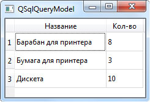

На этом шаге мы рассмотрим cоздание и использование такой модели.
Если требуется вывести на экран данные, извлеченные в результате выполнения SQL-запроса, и эти данные не требуется редактировать, имеет смысл использовать класс QSqlQueryModel. Он представляет модель, связанную с SQL-запросом. Иерархия наследования этого класса:
QObject - QAbstractItemModel - QAbstractTableModel - QSqlQueryModel
Конструктор класса:
<Объект> = QSqlQueryModel([parent=None])
Класс QSqlQueryModel поддерживает следующие методы (здесь приведен их сокращенный список, а полный список методов этого класса доступен на страницах https://doc.qt.io/qt-5/qsqlquerymodel.html и https://doc.qt.io/qt-5/qabstractitemmodel.html):
- setQuery (<Код запроса>[, db=QSqlDatabase()]) - задает код запроса для модели.
Необязательный параметр db задает соединение с базой данных, запрос к которой следует выполнить, - если он не указан, будет использоваться соединение по умолчанию;
- query () - возвращает код запроса, заданного для модели;
- record () - возвращает экземпляр класса QSqlRecord, представляющий сведения о структуре результата запроса;
- record (<Индекс строки>) - возвращает экземпляр класса QSqlRecord, представляющий
сведения о записи, которая соответствует строке модели с указанным индексом;
- lastError () - возвращает экземпляр объекта QSqlError, описывающий последнюю возникшую в базе данных ошибку;
- index (<Строка>, <Столбец> [, parent=QModelIndex()]) - возвращает индекс (экземпляр
класса QModelIndex) элемента модели, находящегося на пересечении строки и столбца
с указанными индексами. Необязательный параметр parent позволяет задать элемент
верхнего уровня для искомого элемента - если таковой не задан, будет выполнен поиск
элемента на самом верхнем уровне иерархии;
- data (<QModelIndex>[, role=DispiayRole]) -возвращает данные, хранимые в указанной
в параметре role роли элемента, на который ссылается индекс <QModelIndex>;
- rowCount ([parent=QModelIndex()]) - возвращает количество элементов в модели. Необязательный параметр parent указывает
элемент верхнего уровня, при этом будет возвращено количество вложенных в него элементов. Если параметр не задан, возвращается
количество элементов верхнего уровня иерархии;
- sort (<Индекс столбца>[, order=AscendingOrder]) - производит сортировку. Если вовтором параметре указан атрибут
AscendingOrder класса Qtcore.Qt, то сортировка производится в прямом порядке, а если DescendingOrder - то в обратном;
- setHeaderData (<Индекс>, <Ориентация>, <3начение>[, role=EditRole]) - задает значение для
указанной роли заголовка. В первом параметре указывается индекс строки или столбца, а во втором - ориентация (атрибут Horizontal или
Vertical класса Qtcore.Qt). Метод возвращает значение True, если операция успешно выполнена;
- headerData (<Индекс>, <Ориентация> [, role=DisplayRole]) - возвращает значение, соответствующее указанной роли заголовка. В первом параметре указывается индекс строки или столбца, а во втором - ориентация.
Рассмотрим пример, выводящий данные из созданной нами ранее базы с помощью компонента таблицы.
from PyQt5 import QtCore, QtWidgets, QtSql import sys # Создаем объект приложения, иначе поддержка баз данных не будет работать app = QtWidgets.QApplication(sys.argv) window = QtWidgets.QTableView() window.setWindowTitle("QSqlQueryModel") # Устанавливаем соединение с базой данных con = QtSql.QSqlDatabase.addDatabase('QSQLITE') con.setDatabaseName('c:\\temp\\data.sqlite') con.open() # Создаем модель sqm = QtSql.QSqlQueryModel(parent=window) sqm.setQuery('select * from good order by goodname') # Задаем заголовки для столбцов модели sqm.setHeaderData(1, QtCore.Qt.Horizontal, 'Название') sqm.setHeaderData(2, QtCore.Qt.Horizontal, 'Кол-во') # Задаем для таблицы только что созданную модель window.setModel(sqm) # Скрываем первый столбец, в котором выводится идентификатор window.hideColumn(0) window.setColumnWidth(1, 150) window.setColumnWidth(2, 60) window.resize(230, 130) window.show() sys.exit(app.exec_())
Результат работы приложения изображен на рисунке 1.

Рис.1. Результат работы приложения
На следующем шаге мы рассмотрим модель, связанную с таблицей.